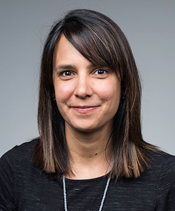
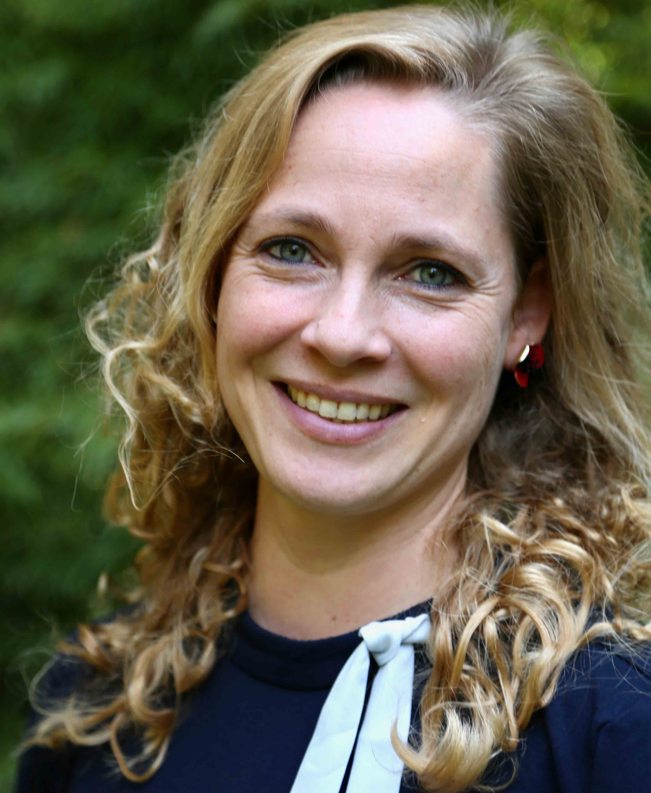

Maya Abtahian
Email: maya.r.abtahian@rochester.edu
Maya Abtahian is an Assistant Professor in the Linguistics Department at the University of Rochester. She received her PhD from the University of Pennsylvania in 2009. Her dissertation, ``Language Shift and the Speech Community: Sociolinguistic Change in a Garifuna Community in Belize'', was advised by Gillian Sankoff, David Embick, and William Labov. Prior to coming to Rochester, she was an Assistant Professor at the University of New Hampshire. Maya works on language variation and change in the context of language shift and other social changes. She has fieldwork experience in Belize and Indonesia.
Nadine Grimm
Nadine Grimm is an Assistant Professor in the Linguistics Department at the University of Rochester. Her research interests center around language description and documentation and typology.
Jess Charest
Jess is a Linguistics PhD student (class of 2026). She is interested in ethnomusicology, language documentation and revitalization, with a focus on community-centered approaches. Currently, her research centers around the tone-tune relationship in traditional Tujia folk songs, a Sino-Tibetan language spoken in the Hunan Province of China. Jess is investigating questions such as: In a tonal language, does tone dictate melody, or does the melody influence the manifestation of tone?
Becky Everson
Becky is a Master's student in the ``Language Documentation and Description'' program (class of 2024). She is interested in the description and documentation of Bantu languages, with a focus on tone in nouns and verbal predicates, as well as contact between Bantu and Khoe languages. She has been awarded an ELDP small grant (2023-24) to document subsistence strategies in Tjhauba [ISO xkv], an endangered Bantu (S311) language spoken in northwestern Botswana. Prior to her first fieldtrip, she has already started to help the community with the construction of a community-generated website, sharing cultural, ecological, and linguistic information. Becky has also been involved in the Grammar and Variation Lab project on sociolinguistic variation in reference grammars. Together with Scott Kirshner, she presented the paper ``Towards a typology of sociolinguistic variation'' at the ALT 22 conference at Austin, Texas in December 2022.
Scott Kirshner
Scott is a Master's student (class of 2023) in the Linguistics Program. His research is focused on variation in the Rochester Jewish Community Oral History Project, a collection of oral history interviews from the 1970s. Using qualitative and quantitative methods, Scott is investigating associations between variation, ethnic identity, and connectedness to one's community.
Yizhen Ma
Yizhen is a Master's student in the Language Documentation and Description Program, transitioning into the PhD program in 2023/24. Her current interests include Hakka and Chinese dialectology.
Suhasini Patni
Suhasini is a Master's student (class of 2024) interested in sociolinguistics, multilingualism, and the Vietnamese language. Currently, she is working with Dr. Maya Abtahian to study the deletion of the schwa vowel in Jakartan Indonesian.
Suganya Rajendran Schmura
Suganya is a PhD student in Linguistics (class of 2027) at the University of Rochester where she is a member of the Grammar and Variation Lab and the Social Media Manager for GSOC (Graduate Students of Color). She completed her MS in Applied Linguistics at Texas A&M University-Commerce where she wrote her thesis on Tamil heritage language maintenance and ethnolinguistic identity. Her research interests include language and identity, Tamil-English translanguaging, sociophonetics, and language variation within communities that speak non-standard or marginalized English varieties. In her free time, she likes to paint, nap, and spend time with her cat, Lima.